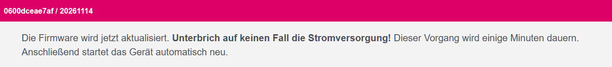

ASUS TUF-AX4200: Freifunk-Firmware installieren

Sei aufmerksam und hör auf, wenn etwas anders aussieht als hier
beschrieben.
Freifunk Darmstadt beschreibt denselben Weg für ihre Freifunk-Firmware.
Schreib uns, ob es geklappt hat. Und wenn es irgendwo hakt: Melde dich,
wir helfen dir weiter. Jede Rückmeldung macht die
Anleitung für alle nach dir besser:
projekt@neanderfunk.de
Die ASUS-Firmware nimmt keine fremde Firmware über ihre Weboberfläche an.
Der Weg führt über SSH, also die Anmeldung im Terminal, und hat drei
Etappen:
- Die RAMpe in den Speicher schreiben. Du meldest dich per SSH an der
ASUS-Firmware an. Der Router holt sich die Gluon-RAMpe von deinem
Rechner und schreibt sie anstelle der ASUS-Firmware in den Speicher. Die
RAMpe ist eine kleine Firmware, die nur eins kann: die Freifunk-Firmware
deiner Community annehmen.
- Die RAMpe starten. Nach einem Neustart läuft sie.
- Die Freifunk-Firmware aufspielen. Auf der Seite der RAMpe lädst du
sie im Browser hoch.
Du brauchst dafür SSH (SSH und scp benutzen)
und Python 3 auf deinem Rechner. Rechne mit einer Dreiviertelstunde.
Was du brauchst
Vorher prüfen
Diese Anleitung gilt für den TUF-AX4200 mit einem 2,5-Gbit-Anschluss.
Der TUF-AX4200Q mit zwei 2,5-Gbit-Anschlüssen ist ein anderes Gerät, für
das es keine Freifunk-Firmware gibt. Schau auf das Typenschild.
Schritte
Die RAMpe in den Speicher schreiben
-
Webserver auf dem Rechner starten. Leg einen Ordner rampe-webroot
an, kopier die RAMpe-Datei hinein und benenn sie dort in rampe.bin
um. Öffne ein Terminal in dem Ordner, in dem rampe-webroot liegt,
und starte:
python3 -m http.server -d rampe-webroot 8080
Unter Windows heißt der Befehl py statt python3. Erlaube der
Windows-Firewall beim ersten Start den Zugriff. Lass das Terminal offen,
bis Schritt 6 vorbei ist.
-
Router einrichten. Steck das Kabel vom Rechner in eine LAN-Buchse des
Routers und schalte ihn ein. Der Rechner bleibt auf "automatisch" (DHCP).
Öffne http://192.168.50.1 und geh den Einrichtungsassistenten der
ASUS-Firmware durch. Merk dir den Benutzernamen und das Passwort, das du
dort vergibst.
-
SSH einschalten. In der ASUS-Oberfläche unter Administration →
System → Service SSH einschalten, und zwar "LAN only", mit
Anmeldung per Passwort, Port 22. Speichern.
-
Anmelden. In einem zweiten Terminal auf deinem Rechner (statt admin
den Benutzernamen aus Schritt 2):
ssh admin@192.168.50.1
-
Dem Router deinen Rechner bekannt machen. Gib auf dem Router ein:
echo "${SSH_CLIENT%% *} openwrtimage.lan" >> /etc/hosts
tail -1 /etc/hosts
Prüfen: Die letzte Zeile lautet etwa 192.168.50.123 openwrtimage.lan,
also eine Adresse und dahinter openwrtimage.lan. Steht vorn keine
Adresse, such die Adresse deines Rechners heraus (Windows: ipconfig,
Linux: ip addr, macOS: ipconfig getifaddr en0) und trag sie von Hand
ein, zum Beispiel:
echo "192.168.50.123 openwrtimage.lan" >> /etc/hosts
-
Die RAMpe holen. Auf dem Router:
wget -O /tmp/rampe.bin http://openwrtimage.lan:8080/rampe.bin
Prüfen: wget meldet keinen Fehler, und im Terminal mit dem
Webserver erscheint eine Zeile mit GET /rampe.bin und 200. Sonst
hier aufhören und Schritt 1 und 5 prüfen.
-
Schreiben. Jetzt wird die ASUS-Firmware überschrieben.
Ab dem ersten Befehl, bis mtd-write fertig ist, auf keinen Fall den
Strom ziehen. In dieser Zeit ist die ASUS-Firmware schon gelöscht und
die RAMpe noch nicht vollständig geschrieben. Dann hilft nur noch die
serielle Konsole.
Gib die beiden Befehle nacheinander ein, genau so:
mtd-erase -d linux
mtd-write -i /tmp/rampe.bin -d linux
Beide Befehle zeigen keinen Fortschritt. Warte, bis die Eingabe wieder
erscheint.
Die RAMpe starten
- Neu starten. Zieh den Stecker des Netzteils, warte ein paar Sekunden
und steck ihn wieder ein. Nach etwa einer Minute läuft die RAMpe unter
192.168.1.1. Damit dein Rechner eine passende Adresse bekommt, zieh das
Netzwerkkabel am Rechner kurz ab und steck es wieder ein.
Freifunk-Firmware aufspielen
-
Die RAMpe-Seite öffnen. Öffne http://192.168.1.1. Die RAMpe
leitet von selbst auf ihre Seite "Firmware aktualisieren" weiter. Kommt
stattdessen "Not Found", hat sich der Browser eine Weiterleitung von
früher gemerkt, siehe Der Browser zeigt "Not Found".
Kommt gar nichts, siehe Die Router-Seite antwortet nicht.
Zeigt der Browser eine Warnung vor einem unsicheren Zertifikat, hat er
von sich aus https:// vor die Adresse gesetzt, siehe
Browser macht https daraus.
Die RAMpe bleibt auf dem Router, bis die Freifunk-Firmware sie ersetzt.
Startet der Router zwischendurch neu, ist das harmlos: Seite einfach
wieder aufrufen.

-
Freifunk-Firmware hochladen. Wähl das sysupgrade-Image
deiner Community aus und klick "Datei hochladen". Die RAMpe zeigt die
Prüfsumme (SHA256) der Datei. Vergleich sie mit der Prüfsumme, die deine
Community zur Datei angibt. Stimmt sie, klick "Fortfahren".

Danach erscheint der Hinweis, dass die Firmware jetzt geschrieben wird.
Jetzt den Strom nicht unterbrechen.

-
Fertig. Einige Minuten warten, Strom nicht ziehen. Danach startet
die Freifunk-Firmware deiner Community: je nach Community zuerst mit
einer Einrichtungsseite unter http://192.168.1.1 oder gleich im
Betrieb.
Antwortet dort nichts, siehe Die Router-Seite antwortet
nicht; kommt "Not Found", siehe
Der Browser zeigt "Not Found". Den Webserver aus Schritt 1 kannst du mit Strg+C beenden.
Woran du erkennst, dass es geklappt hat
- In Schritt 5 steht eine Adresse vor
openwrtimage.lan.
- In Schritt 6 zeigt der Webserver
GET /rampe.bin mit 200.
- Nach Schritt 8 zeigt
http://192.168.1.1 die RAMpe-Seite "Firmware
aktualisieren".
- Nach Schritt 11 meldet sich die Freifunk-Firmware.
Wenn etwas schiefgeht
ssh kommt in Schritt 4 nicht durch. Prüf in der ASUS-Oberfläche, ob
SSH an ist, "LAN only" und Port 22. Den Benutzernamen hast du im
Assistenten selbst vergeben.wget meldet einen Fehler. Läuft der Webserver noch? Lässt die
Firewall deines Rechners Port 8080 durch? Stimmt die Adresse in
/etc/hosts (Schritt 5)? Liegt rampe.bin wirklich im Ordner
rampe-webroot?- Nach Schritt 8 antwortet nichts unter
192.168.1.1. Warte noch etwas
und steck das Netzwerkkabel am Rechner neu ein. Kommt auch nach fünf
Minuten nichts, schreib uns. Weiter geht es dann nur über die serielle
Konsole im Router.
- Meldet
ssh "REMOTE HOST IDENTIFICATION HAS CHANGED", siehe
SSH und scp benutzen.
Anderer Weg: über OpenWrt
Statt der RAMpe lässt sich in Schritt 1 bis 7 auch das OpenWrt-"factory-initramfs"
schreiben: openwrt-mediatek-filogic-asus_tuf-ax4200-initramfs-kernel.bin. Die Datei hat ein Freifunk-Entwickler für genau diesen Zweck gebaut (Dezember 2023); eine offizielle Datei von OpenWrt dafür gibt es nicht.
Benenn es im Webserver-Ordner in rampe.bin um, dann passen die Befehle
oben. Nach dem Neustart läuft OpenWrt unter 192.168.1.1; die
Freifunk-Firmware kommt dann per scp und ssh
(SSH und scp benutzen): das sysupgrade-Image in
gluon.bin umbenennen und
scp -O gluon.bin root@192.168.1.1:/tmp/gluon.bin
ssh root@192.168.1.1 "sysupgrade -n /tmp/gluon.bin"
Ein Passwort gibt es nicht. Nach dem zweiten Befehl bricht die Verbindung
ab, das ist harmlos.
Zurück zur ASUS-Firmware
Laut OpenWrt-Wiki hilft dafür das ASUS-Werkzeug "Firmware Restoration" mit
dem Rettungsmodus des Routers.
Freifunk-Installationsanleitung, erzeugt aus gluon-rampe-installer.